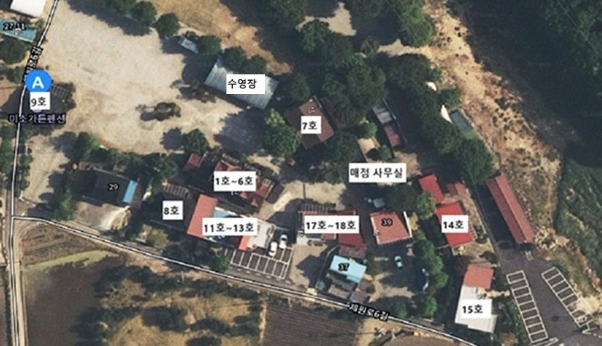

미소가든펜션캠핑장은 어디에 있나요? 가는 길과 주변 가볼 만한 곳(배론성지·치악산자연휴양림·구학산)
미소가든펜션캠핑장은 충북 제천시 봉양읍 제원로6길 39(지번 봉양읍 옥전리 58-7)에 있습니다. 1만 평 부지에 독채 객실과 캠핑장이 함께 있고 바로 옆으로 계곡이 흐릅니다. 차로 배론성지까지 약 6분, 치악산자연휴양림까지 약 19분, 구학산까지 약 30분 거리라 머무는 동안 둘러보기 좋습니다.

찾아오는 방법
- 내비게이션: 「제원로6길 39」 검색 (주소로 찾는 게 가장 정확합니다)
- 주차: 단지 안 무료 주차
- 픽업: 운영하지 않습니다
- 밤 10시 이후 도착: 미리 전화로 알려 주세요
주변 가볼 만한 곳
| 장소 | 차로 걸리는 시간 |
|---|---|
| 배론성지 | 약 6분 |
| 치악산자연휴양림 | 약 19분 |
| 구학산 | 약 30분 |
배론성지
제천 봉양읍에 있는 천주교 성지입니다. 펜션에서 가장 가까워 오전에 잠깐 다녀오기 좋습니다.
치악산자연휴양림
치악산 자락에 있는 자연휴양림으로 숲길을 걷기 좋습니다.
구학산
제천과 원주 사이에 있는 산으로, 등산을 겸한 여행 코스로 들르기 좋습니다.
자주 묻는 질문
주차할 수 있나요?
네, 단지 안에 무료로 주차할 수 있습니다.
픽업 서비스가 있나요?
아니요, 픽업은 운영하지 않아 자가용이나 택시로 오셔야 합니다.
늦게 도착해도 되나요?
밤 10시 이후에 도착하면 미리 전화로 알려 주셔야 합니다.
펜션에서 가장 가까운 관광지는 어디인가요?
배론성지로, 차로 약 6분 거리입니다.
객실 구성은 객실 안내 글, 단지 안 시설은 시설 안내 글에서 볼 수 있습니다.
미소가든펜션캠핑장 이용 정보
- 주소: 충북 제천시 봉양읍 제원로6길 39
- 전화: 043-653-2885 / 010-4624-2885
- 입실 15:00 · 퇴실 11:00 (밤 10시 이후 도착 시 사전 연락)
- 실시간 예약: 예약 페이지 바로가기